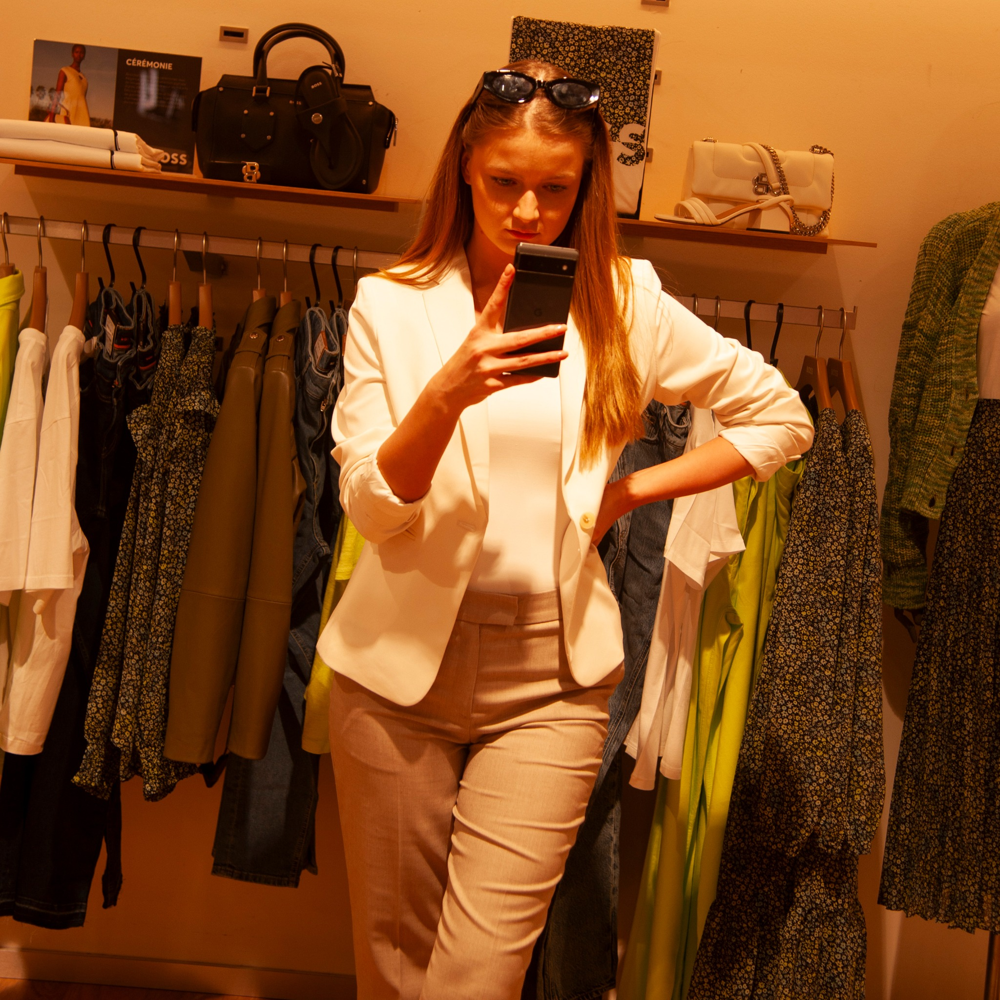

What Should a Guy Wear on a First Date?

If a guy asked me what he should wear on a first date, I wouldn't tell him to buy a certain brand or an expensive outfit. I'd first ask where the date is.
Dress for where you're actually going
What works for coffee isn't necessarily what I'd choose for a nice dinner. For me, it's better when a guy looks comfortable and appropriate for the place instead of obviously overdressing just to impress.
Fit matters more than labels
I notice fit much more than the label. A simple T-shirt, shirt or pair of jeans can look really good if it fits properly. Clean shoes and clothes that look looked-after matter to me too.
Keep some personality
I also wouldn't want a guy to dress like someone he's not just because it's a first date. If he normally has a certain style, I'd rather see a polished version of that than a completely different character.
Don't forget grooming
I notice grooming too: hair, nails, facial hair and fragrance. And with fragrance, less is usually better for me. I want to notice it when I'm close, not from the other side of the room.
For me, the best first-date outfit is one that looks like you, just with a little extra effort.